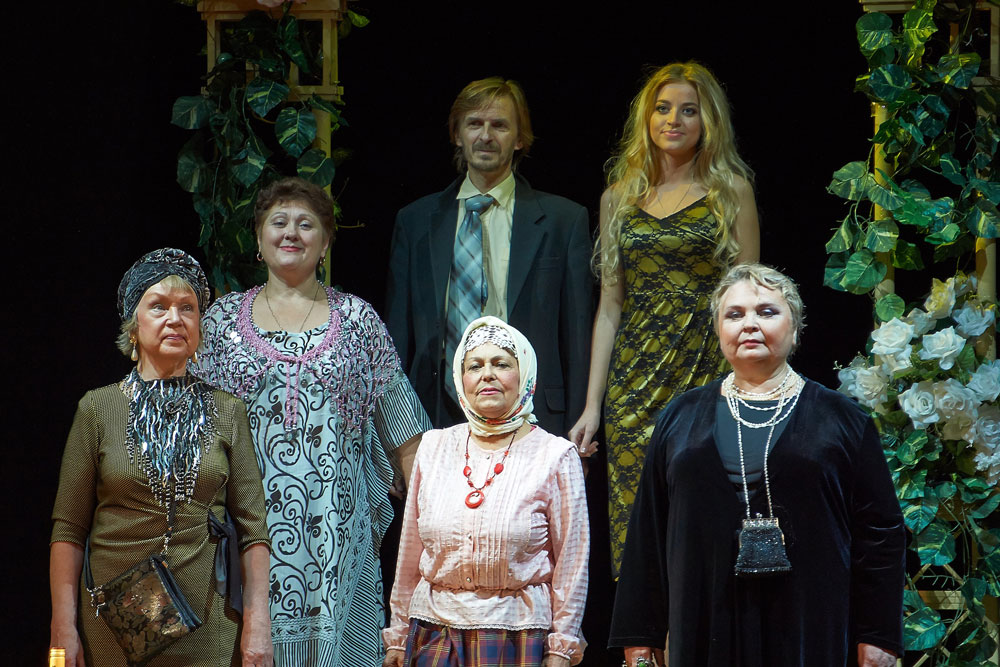
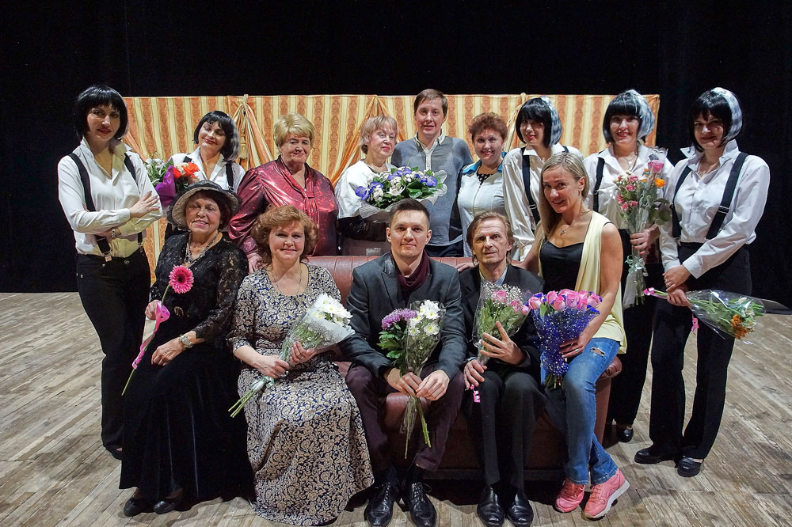

Театральный коллектив “Феникс”
В ноябре 2016 года театральному коллективу «Феникс» исполнится 80 лет. За долгие годы своего существования, у него не раз менялись руководители, было множество талантливых участников. С 2013г. руководит коллективом молодой талантливый режиссер Александр Иванович Ломейко, окончил Запорожский Национальный Университет факультет режиссуры и актерского мастерства.
История создания коллектива уходит в далекий ноябрь 1936 года, когда инициативная группа любителей театрального искусства работников ЗОМЗа решила создать на заводе драматический коллектив, а в 1937 году зрители увидели первый спектакль коллектива по пьесе Карло Гольдони «Слуга двух господ». С открытием в 1954 году Дворца культуры имени Гагарина театральный коллектив получил прекрасные условия для творческой работы и хорошую возможность для развития своих дарований.
За эти годы коллективом созданы более 60 спектаклей от классики до современности. И сейчас каждый день кипит работа, а в работе у театрального коллектива несколько спектаклей – «Пустите в гости» по пьесе Владимира Жеребцова, «Ох, уж эта Анна» Марка Камолетти, «Бесприданник» Людмилы Разумовской, «Набережная Круазетт» Зиновия Сагалова.
В основу занятий коллектива входят занятия по сценической речи, сценическому движению, актерскому мастерству. Дополнительно проводятся занятия по танцу, вокалу. В коллективе проходят встречи с популярными артистами кино и театра, которые проводят мастер классы с участниками.
Коллектив принимает активное участие в мероприятиях Дворца культуры, с удовольствием выезжает с благотворительными спектаклями, несколько раз в год на сцене Дворца культуры представляет спектакли из своего репертуара.
Полным ходом идет работа над новым спектаклем «Последний срок» по одноименной повести Валентина Распутина. Параллельно идет работа над возрождением сказки по пьесе Е. Борисовой «Тайна черного озера», которая была в репертуаре коллектива еще в 60-х годах прошлого века. Актеры трепетно относятся к этой работе, потому что в коллективе есть участники, которые играли в первых постановках этой сказки.
У театрального коллектива есть свой круг зрителей – поклонников, и с каждым годом их становится все больше.
В коллективе занимаются очень разные творческие люди различных профессий и возрастов, они уверенны в себе, и очень талантливы. Это большая дружная семья, которую объединяет безграничная любовь к театру!